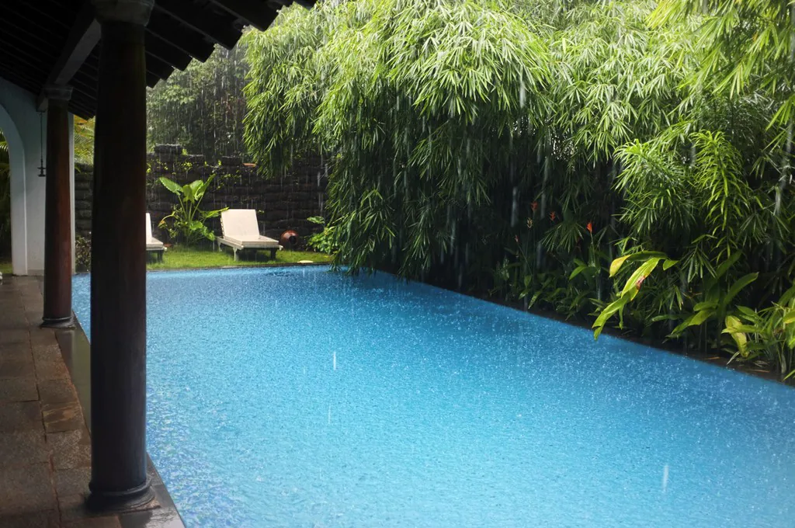

The Ikshaa journal — notes on Goa, its food and its houses
Scroll
Ikshaa journal
Writing from a village in South Goa
A balcão is the covered porch of an old Goan house, with seats built into
the wall and a view of the road. It is where the afternoon is spent, and where most
of what anyone knows about a village gets passed along. This is that, written down.
Lifestyle
Susegad is not laziness
Visitors hear the word within a day of arriving, and almost everyone
mistranslates it.
Words by Carman · Reading time: 4 minutes
Susegad comes from the Portuguese sossegado — quiet, settled, at rest. Four
hundred and fifty years of Portuguese rule left Goa a language, a cuisine, a body of law
and this one word, which has outlasted most of the rest.
It is usually explained to tourists as laziness, generally by people who have been here
three days. That is not what it means. Susegad is the refusal to be hurried by things
that do not warrant hurry. It is a judgement about what is worth rushing for, and the
answer is: very little.
The village does not slow down for guests. That is rather the point of coming.
You will notice it first in the afternoons. Between roughly one and four, Loutolim closes.
Not by ordinance — by consensus. The heat makes an argument that everybody accepted
a long time ago, and the shops reopen when it has passed.
It takes most people two days to stop resenting this and start arranging their day around
it. The third morning is usually when a guest says they have slept properly for the first
time in months.
The courtyard, mid-afternoon. Nothing is happening, deliberately.
Cuisine
What Goa actually eats
Very little of it is the beach-shack menu, and almost none of it is
what gets served as "Goan" elsewhere in India.
Words by Carman · Reading time: 6 minutes
Goan food is a collision. Coconut, kokum and rice from the Konkan coast; chilli, vinegar
and pork from the Portuguese, who also brought the cashew and the potato from Brazil.
The result is a cuisine with a sourness to it that most Indian regional cooking does
not have.
The dishes worth asking for
Xacuti (say it sha-KOO-tee) is chicken or lamb in a sauce of
roasted coconut and something like a dozen spices, ground down until it is almost black.
It is the most laborious thing in the repertoire and the one to order if you eat only
one Goan dish.
Cafreal is the green one — coriander, green chilli, ginger and
vinegar, usually on chicken. The name and the method came with Mozambican and Angolan
cooks who arrived through Portuguese ports, which is a longer journey than most recipes
make.
Sorpotel is pork, offal, vinegar and heat, and it improves for three or
four days in the pot. It is Christmas food in Catholic households and it is not a dish
anybody makes in small quantities.
Ambot tik means sour and hot, which is the whole recipe. Usually shark
or catfish, no coconut, and a good deal sharper than it looks.
And poi, the bread. A pillowy, slightly sour roll that the
poder — the baker — still delivers by bicycle, twice a day, with a
squeeze horn. It is the sound most guests remember afterwards.
Bebinca is the one to leave room for: a layered coconut-and-egg-yolk pudding, each
layer baked separately before the next goes on. Seven layers is standard and sixteen
is showing off. It takes hours and tastes like it took hours.
To drink, there is feni — distilled from cashew apples in the spring, or from
coconut sap the rest of the year. Cashew feni holds a Geographical Indication, the same
protection Champagne has, and it is a genuinely local spirit rather than a souvenir.
It is also strong enough that most visitors get it wrong exactly once.
A cook can be arranged at the house, and it is worth doing for at least one evening.
Ask about xacuti specifically — it is not something anyone makes for one meal.
Dinner at the house. The barbeque in the gazebo does the rest of the work.
Where to go
The great houses of Loutolim and Chandor
Two villages, twenty minutes apart, holding the best surviving
domestic architecture in Goa — and most of it is still somebody's home.
Words by Carman · Reading time: 5 minutes
The Portuguese-era mansions of South Goa were built by families who made money in the
spice and colonial trades, and they were built to a pattern: a blank, high wall to the
road, a balcão at the front, and everything of interest turned inward around a
courtyard. From outside they give away very little. That is intentional.
Loutolim, where this house is, has several. Casa Araujo Alvares is the
one set up for visitors, with rooms kept as they were and a sound-and-light commentary
that is more charming than it sounds.
Chandor, a short drive inland, has the one everybody comes for. Braganza
House runs the length of an entire side of the village square, and is
extraordinary for a reason that is easy to miss: it is divided down the middle between
two branches of the same family, who inherited it in the eighteenth century and have
maintained their halves separately ever since. You can tour both. They do not match.
These are houses, not museums. Somebody lives behind most of the doors you
are not shown.
Go in the morning. The light in those long ballroom windows is the entire point, and
by three the shutters are usually closed against the heat.
The door at Ikshaa. The pattern is the same across the village.
Season
Coming in the rains
June to September is the season most people avoid and the one we
would choose.
Words by Carman · Reading time: 4 minutes
The monsoon arrives in Goa around the first week of June and does not so much rain as
commit to it. For three months the state turns a green that photographs badly and looks
extraordinary in person, the paddy fields fill, and the waterfalls that are a trickle in
March become the reason people drive into the ghats.
Most of the coast shuts. The shacks come down — they are temporary structures,
rebuilt every October — the water is too rough to swim, and the crowds go home.
What is left is the Goa that lives here. Villages you can walk through without meeting a
tour group. Restaurants where the table is yours for the evening. Rates that bear no
relation to December.
It does not rain all day. It rains hard, often in the afternoon, and then it stops
and everything drips and steams and smells of wet earth. Plan around it rather than
against it and the day works perfectly well.
A house with a courtyard is a good place to watch it from. That is more or less what the
courtyard is for.

Rain over the villa. Three months of this, and then it stops.
Come and see
All of this is within an afternoon
The houses, the food and the rains are twenty minutes from the door in
one direction or another. If you would like a week of it, tell me your dates.